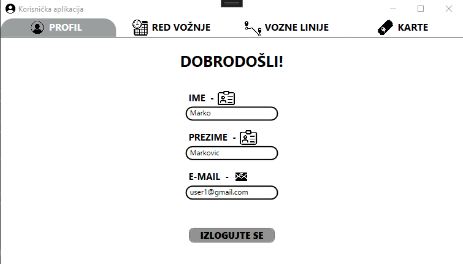
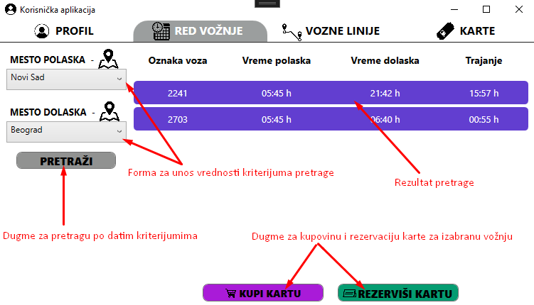
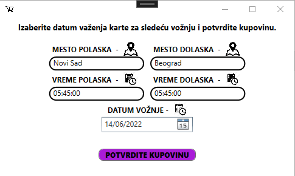
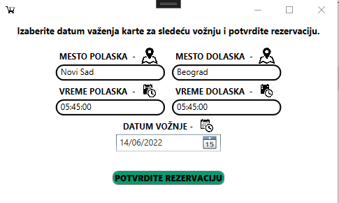
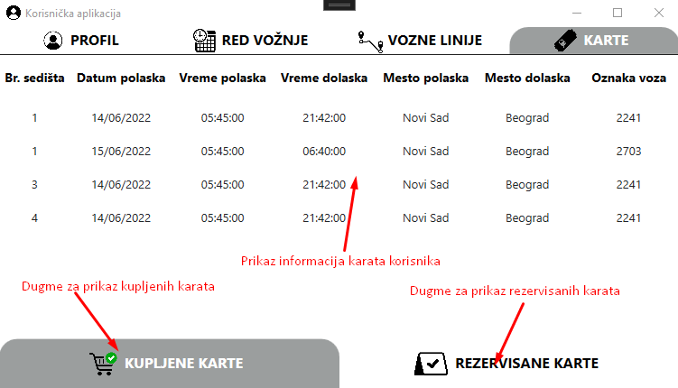

Korisnik može da pregleda osnove podatke o svom nalogu koje je popunio pri registraciji. Jedino ne može da vidi svoju šifru. Ispod ispisa podataka naloga nalazi se duge za odjavu sa aplikacije koja vraća korisnika na strnaicu za prijavu.
Pomoć za korišćenje korisničke aplikacije
Sadržaj:
- Profil korisnika
- Pregled reda vožnje
- Kupovina karata
- Rezervacija karata
- Pregled voznih linija
- Pregled kupljenih i rezervisanih karata
Profil korisnika
Pregled reda vožnje
Korisnik može da pregleda red vožnje na stranici za pretragu unosom mesta polaska i mesta dolaska voza. Da bi pretraga bila uspešna korisnik mora da unese mesto u oba polja, a unesene vrednosti se ne smeju poklapati. Pritiskom na dugme za pretragu korisniku će biti ispisan rezultat te pretrage u vidu redova tabele. Korisnik može selektovati jedan red i isključivo tada uspešno ući na formu za kupovinu ili rezervaciju karte pritiskom na dugme "Kupi kartu" odnosno "Rezerviši kartu".
Kupovina karata
Na formi za kupovinu karte biće ispisane osnovne informacije od izabranoj vožnji. Korisnik tada može da kupi kartu za današnji dan ili da izabere datum iz budućnosti za koji želi da kupi kartu koja će važiti samo tada.
Rezervacija karata
Na formi za rezervaciju karte biće ispisane osnovne informacije od izabranoj vožnji. Korisnik tada može da rezerviše kartu za današnji dan ili da izabere datum iz budućnosti za koji želi da rezerviše kartu.
Pregled voznih linija
TODO

Pregled kupljenih i rezervisanih karata
Korisnik može da pregleda sve karte koje su trenutno aktivne. Na dnu prozora klikom na jedno od 2 dugmeta može da menja prikaze kupljenih i rezervisanih karata. U formi tabele, biće prikazane osnovne informacije svih karata koje korisnik poseduje.
